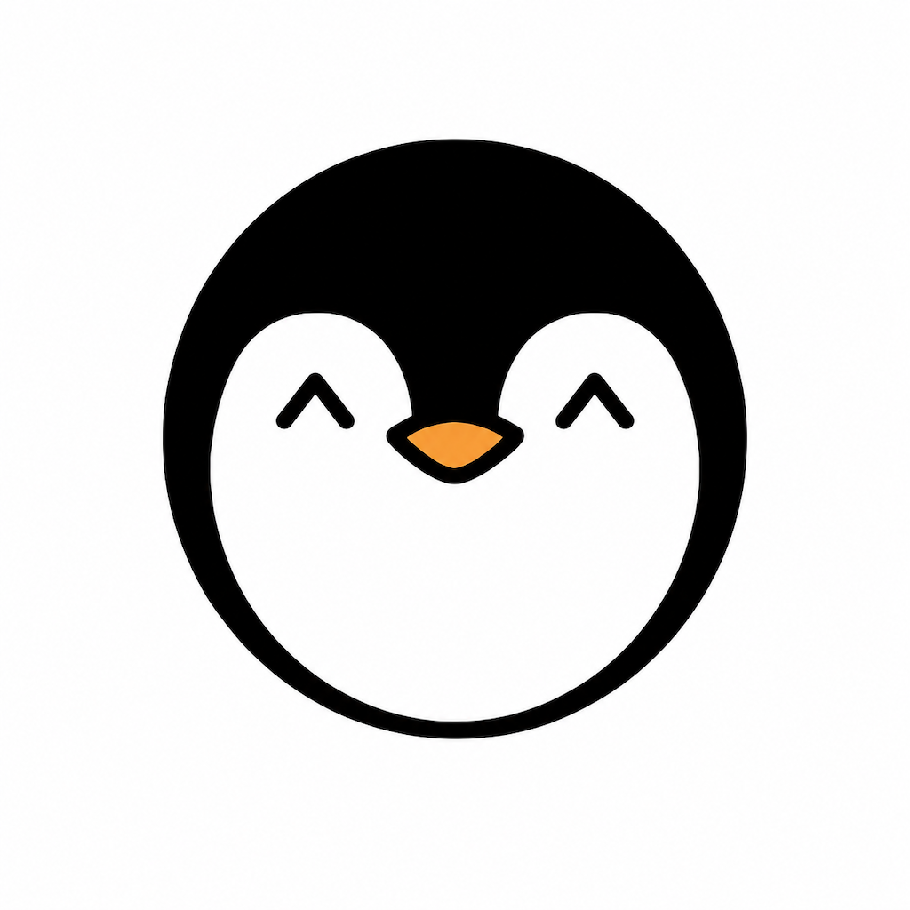
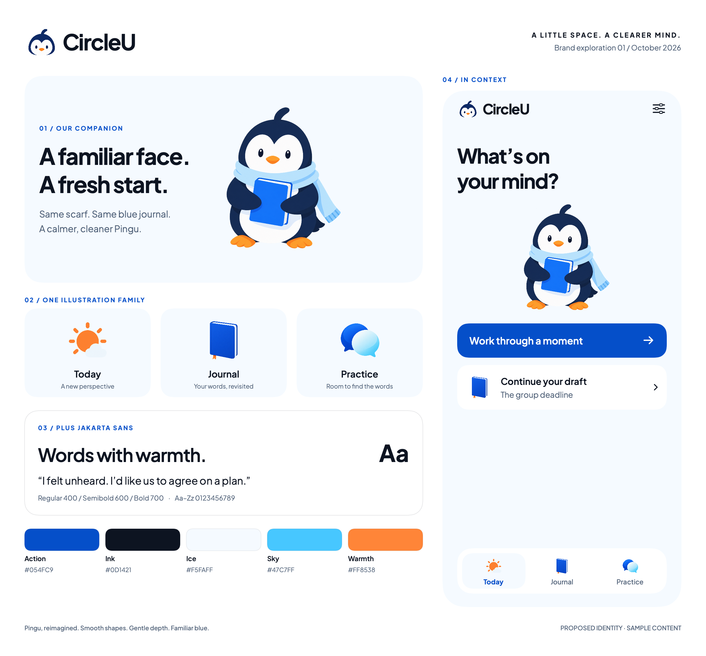
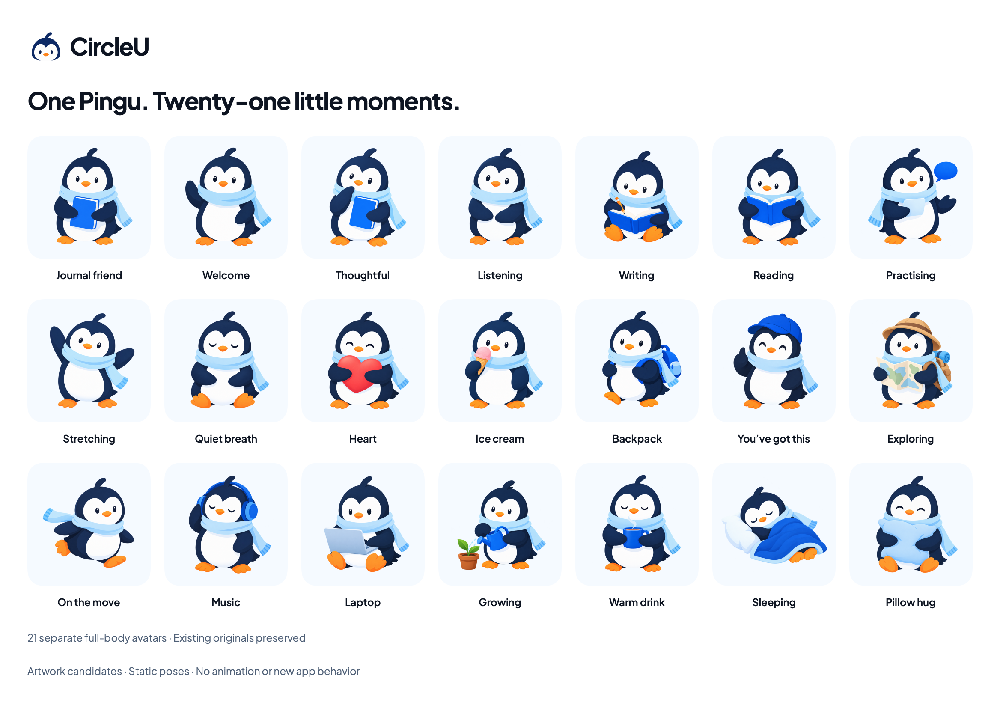
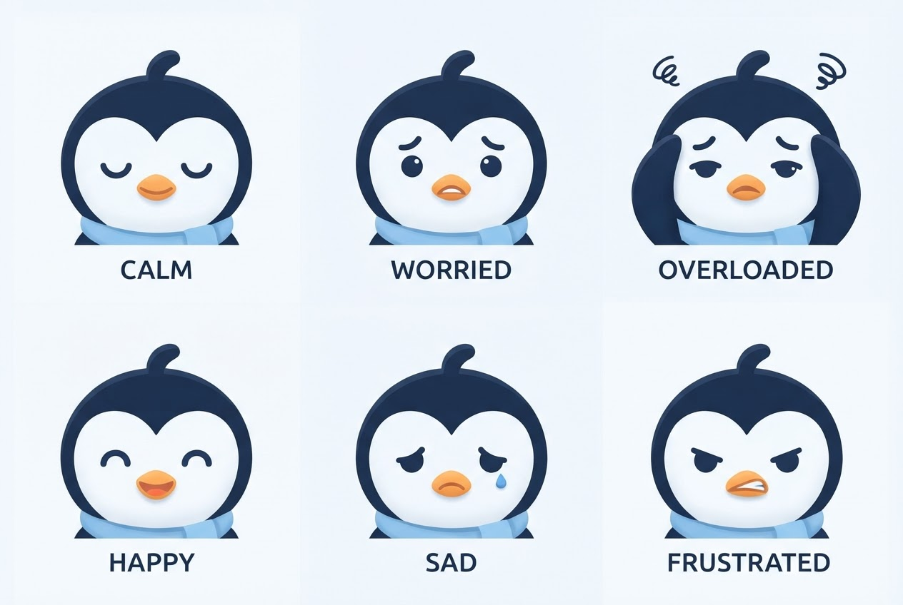
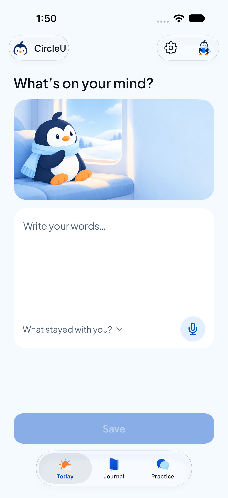

Before
A line-art icon

Black and white, closed eyes, no scarf. Fine on a home screen, nothing to build a world on.
23 Oct
First brand board

One board: a softer Pingu, Plus Jakarta Sans, five colours, and the first "What's on your mind?" screen. Chosen the same day.
1board
24 Oct
One Pingu, many poses

Full-body poses from one face: writing, listening, a warm drink. The person picks one for the header.
21avatars
26 Oct
Feelings, as faces

Six portraits for the Journal tags. Same eyes and scarf, so a 26 px tag still reads as Pingu.
6feelings
30 Oct
A world to sit in

Nine 2:1 scenes in one ice-blue room, swapped by state: writing, listening, reflecting, refining.
9scenes
1 Nov
In the app

One asset catalog, one enum per family, a provenance file for every image. No design mockups on the poster.
80+assets